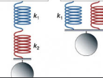
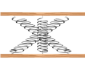
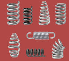
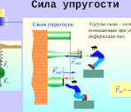
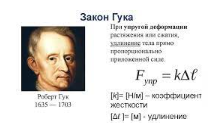

Краткая теория
В настоящее время этот закон Гука в обобщенном виде служит основанием математической теории упругости.Гука в обобщенном виде служит основанием математической теории упругости.Гука в обобщенном виде служит основанием математической теории упругости.
...Цель исследования
Модельным образцом показать зависимость силы упругости.Модельным образцом показать зависимость силы упругости.Модельным образцом показать зависимость силы упругости.Модельным образцом показать зависимость силы упругости.
...Цель исследования
Модельным образцом показать зависимость силы упругости.Модельным образцом показать зависимость силы упругости.Модельным образцом показать зависимость силы упругости.
...